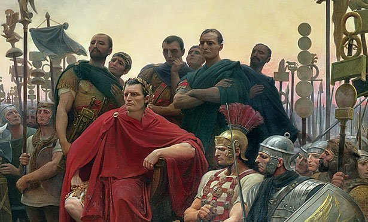
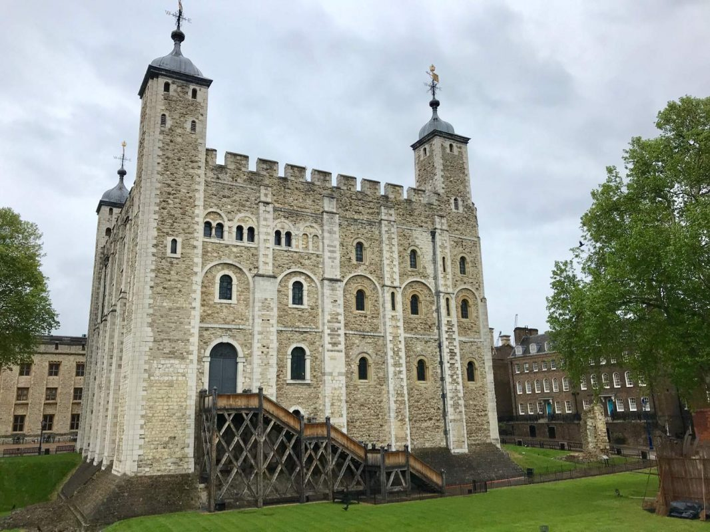
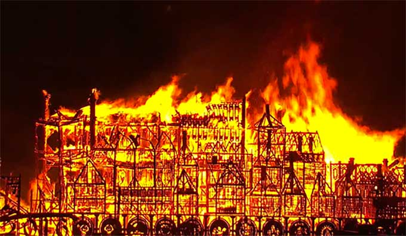
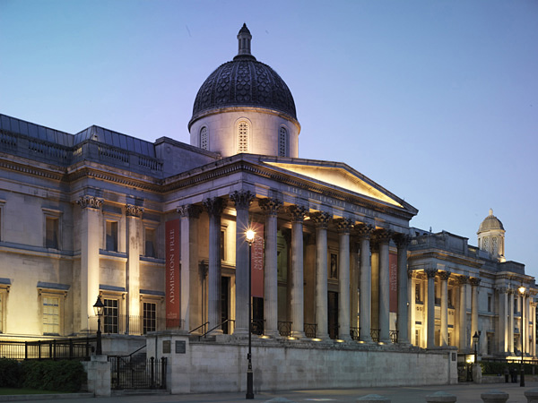
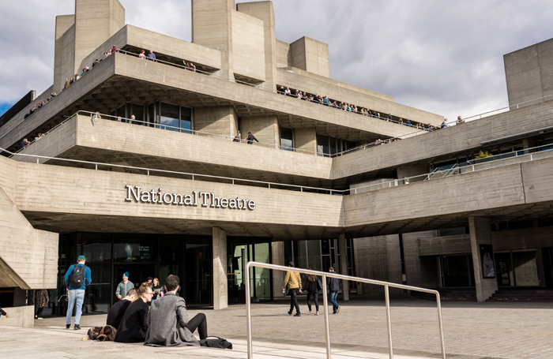
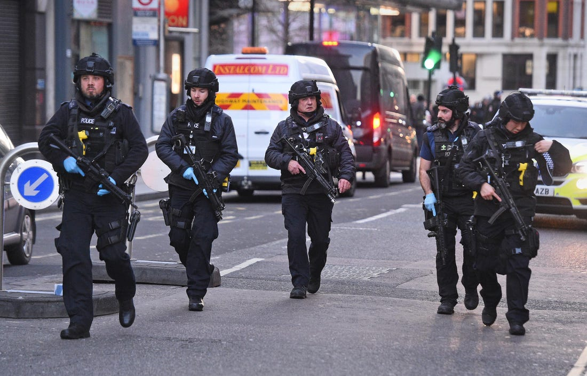
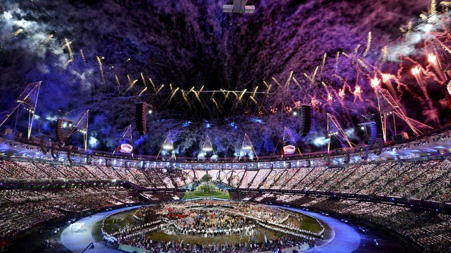

Our history
Londons Geschichte ist sehr durchwachsen und geprägt von Zerstörung und Wiederaufbau.
Von Julius Cäsar bis
heute
ist einiges passiert. Hier finden Sie die wichtigsten Ereignisse bie 2012.
Julius Cäsar entdekt Großbritannien
(55 V.Chr)
(55 V.Chr)

Tower of London wurde gebaut
1078
1078

Großbrand in London
1666
1666

Nationale Galerie wurde gegründet
1824
1824

Tower Bridge wurde fertiggestellt
1894
1894

National Theater wurde eröffnet
1976
1976

Terroranschlag auf London
2005
2005

Olympische Spiele in London
2012
2012
